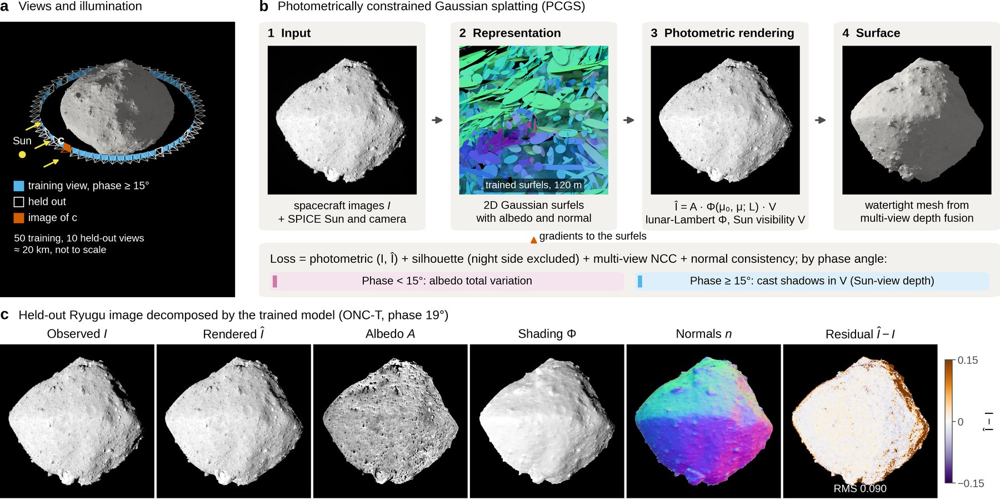
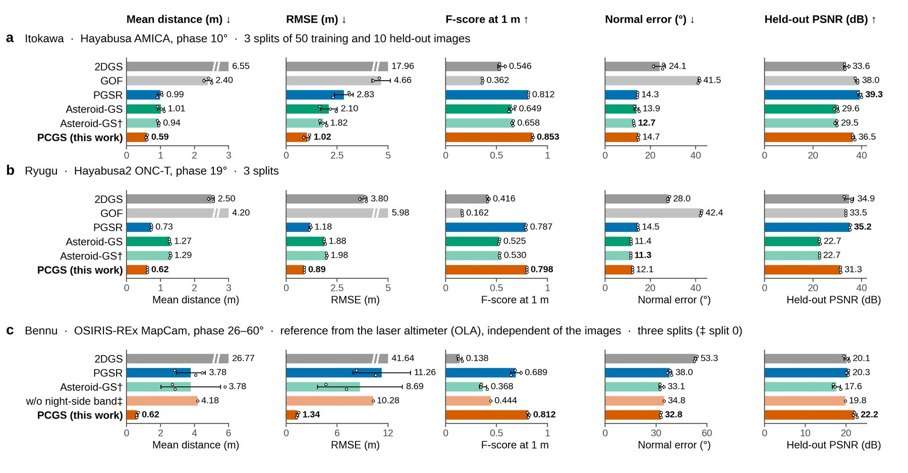
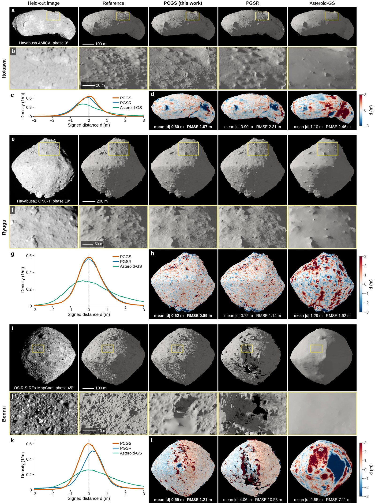
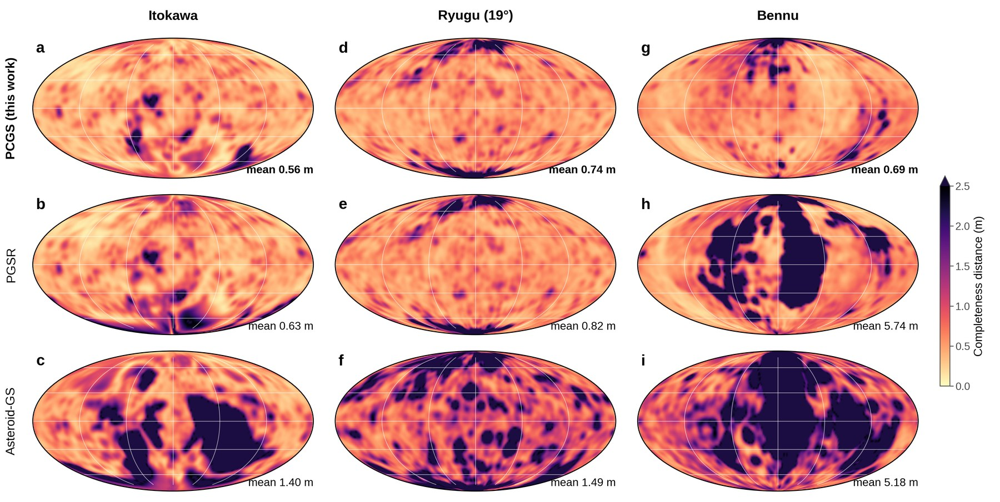
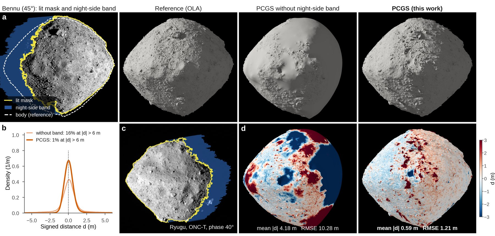
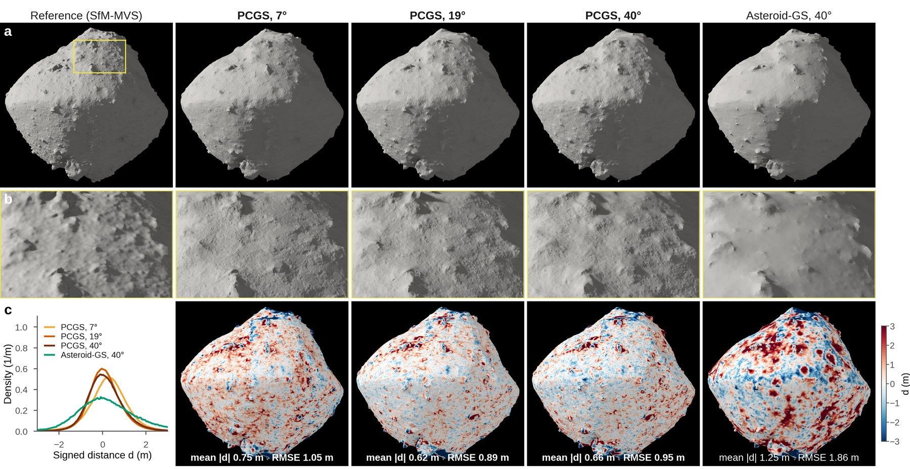
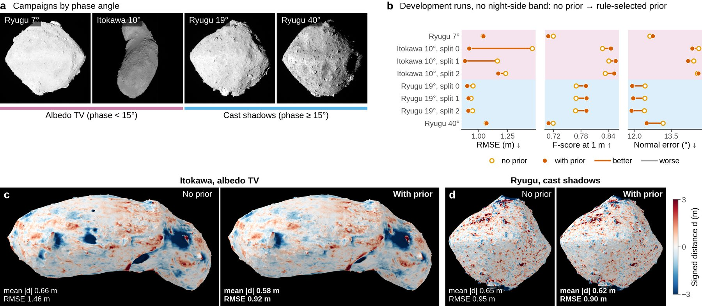
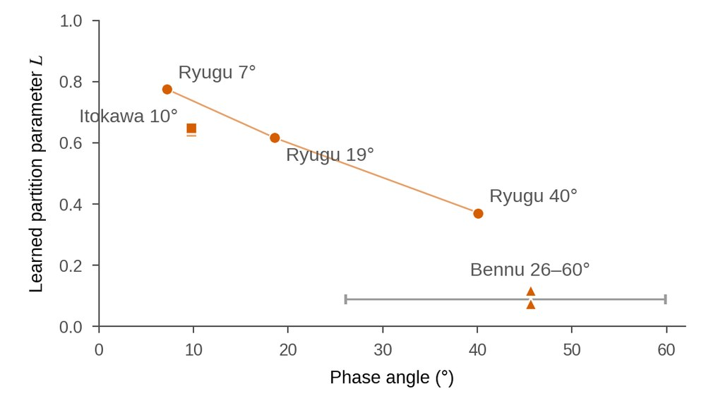
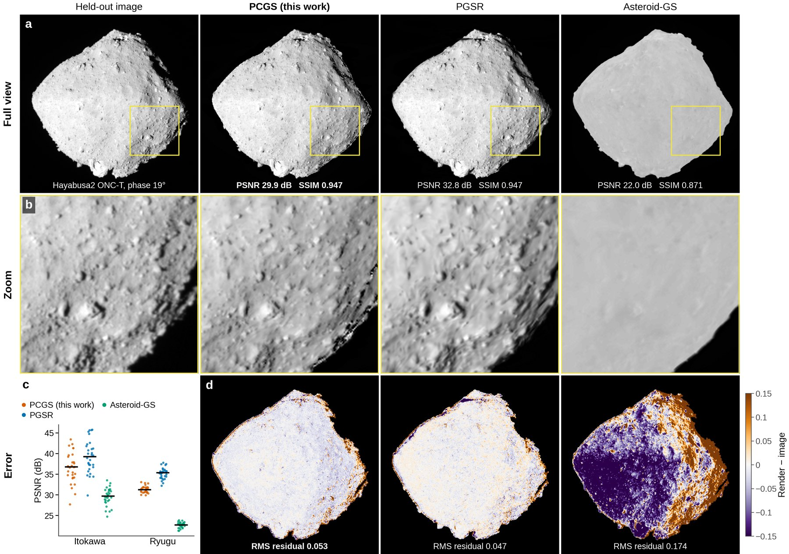

A first global shape model of a small body is often needed early in a rendezvous, when only a few dozen images are available. Gaussian splatting reconstructs surfaces from such image sets within tens of minutes, but it treats brightness as a free, view-dependent colour and ignores the solar illumination, which is known for every image.
Photometrically constrained Gaussian splatting (PCGS) renders each image from view-independent surfel albedos shaded by a lunar-Lambert function under the Sun direction of that image and, at phase angles of 15° and above, attenuated by cast shadows computed from the Sun's viewpoint; at lower phase angles a total-variation prior on the albedo separates albedo from shading. The silhouette loss ignores a band beyond the terminator in which the unlit body may lie, and closed meshes are fused from depth that agrees between views. We applied PCGS to five image sets of Itokawa, Ryugu and Bennu at phase angles of 7–60°, each with 40–50 training images, and compared it with four Gaussian splatting methods under identical inputs.
The mean distance of PCGS to the mission shape models is 0.59 m on Itokawa and 0.62 m on Ryugu, 37% and 15% lower than that of the best competing method, and the registered volumes agree with the references to within 0.3%. Against the laser-altimeter shape model of Bennu, the mean distance is 0.62 ± 0.06 m, compared with more than 3.7 m for the other methods; most of this difference is due to the treatment of the night side. The learned lunar-Lambert parameter decreases with phase angle, and on Itokawa and Ryugu the method that best reproduces held-out images does not produce the most accurate shape.

Rendering under the known Sun. The rendered albedo A is shaded by the lunar-Lambert function Φ(μ0, μ) of the rendered normal and the SPICE Sun direction of each image, and multiplied by a cast-shadow factor V from a Sun-view depth map: Î = A Φ V. A brightness difference between two views of the same surface element must then be explained by its orientation, not by a change of colour.
Regularisation that follows the illumination. Below 15° phase the shading contrast is weak, and a total-variation prior assigns brightness variations to the geometry rather than to the albedo; at and above 15° cast shadows are rendered. A band behind the lit limb, as wide as the night side at the phase angle of the image, is excluded from the silhouette loss, so the unlit body is not carved away.
Reference-free extraction. Depth is kept only where at least three other views agree, meshed by screened Poisson reconstruction, regions that no view supports are faired, and the mesh is offset to the structure-from-motion tie points. No step uses a reference model.
Split-0 meshes turning about the spin axis: reference shape model (left) and PCGS (right).
Itokawa · Hayabusa AMICA, 10°
Ryugu · Hayabusa2 ONC-T, 19°
Bennu · OSIRIS-REx MapCam, 26–60°
| Method | Itokawa (AMICA, 10°) | Ryugu (ONC-T, 19°) | Bennu (MapCam, 26–60°) | ||||||
|---|---|---|---|---|---|---|---|---|---|
| Mean ↓ | RMSE ↓ | F@1m ↑ | Mean ↓ | RMSE ↓ | F@1m ↑ | Mean ↓ | RMSE ↓ | F@1m ↑ | |
| 2DGS | 6.55 | 17.96 | 0.546 | 2.50 | 3.80 | 0.416 | 26.77 | 41.64 | 0.138 |
| GOF | 2.40 | 4.66 | 0.362 | 4.20 | 5.98 | 0.162 | – | – | – |
| PGSR | 0.99 | 2.83 | 0.812 | 0.73 | 1.18 | 0.787 | 3.78 | 11.26 | 0.689 |
| Asteroid-GS | 1.01 | 2.10 | 0.649 | 1.27 | 1.88 | 0.525 | – | – | – |
| Asteroid-GS† | 0.94 | 1.82 | 0.658 | 1.29 | 1.98 | 0.530 | 3.78 | 8.69 | 0.368 |
| PCGS (ours) | 0.59 | 1.02 | 0.853 | 0.62 | 0.89 | 0.798 | 0.62 | 1.34 | 0.812 |
Mean over three random splits (about 50 training and 10 held-out images). Mean and RMSE in metres, from the mesh vertices to the reference surface; F@1m: F-score at 1 m. References: Itokawa, stereophotoclinometry model; Ryugu, structure-from-motion model; Bennu, laser-altimeter (OLA) model, which is independent of images. All methods use the same images, cameras, masks and post-processing. Best in bold, second best underlined. Asteroid-GS uses the object extent of the other methods; †with the scene extent of its public code, the only variant run on Bennu. GOF exceeded the GPU memory on Bennu.

Every metric, every split. Bars give the mean over three splits and dots the individual splits. On Bennu, PCGS without the night-side band (light bar) performs like the baselines: the gain there comes from treating the unlit night side with the known illumination geometry.

Where the error lies. Reconstructions seen from a held-out camera, a zoomed window placed where the reference has the most relief, and the signed distance to the reference. PCGS keeps the shapes of individual boulders and shows small, unbiased errors; on Bennu, PGSR leaves holes and Asteroid-GS pulls a large part of the surface inwards.

The whole surface. Distance from the reference surface to each reconstruction, mapped over the body in the body-fixed frame. On Bennu, PGSR and Asteroid-GS miss large parts of the body; the errors of PCGS stay small almost everywhere.

At high phase angle a large part of the body lies beyond the terminator and is dark in every image, so a mask derived from the image no longer outlines the body (yellow: lit mask; white: the body from the laser-altimeter model). A silhouette loss on such masks carves the body away. PCGS knows the Sun direction and excludes a band as wide as the night crescent from the silhouette loss: on Bennu, the share of vertices farther than 6 m from the reference drops from 16% to 1%.

Ryugu reconstructed independently from three campaigns, months apart, at phase angles of 7°, 19° and 40°, seen from the same camera. The three PCGS models are nearly identical down to the large boulders, with mean errors of 0.75, 0.62 and 0.66 m; Asteroid-GS on the 40° images reaches 1.25 m.

Ryugu was imaged at 7°, 19° and 40° phase, which shows the same body under three illumination geometries; Itokawa (10°) and Bennu (26–60°) extend the range. An albedo total-variation prior helps where the shading is weak (Itokawa), cast shadows help where they are frequent (Bennu), and PCGS stays between 0.59 and 0.75 m mean distance on every campaign.

The learned photometric parameter behaves physically. The lunar-Lambert partition parameter L is fitted only to make the shape consistent with the images. It is reproducible between splits and decreases with phase angle, from 0.78 at 7° to 0.37 at 40° on Ryugu and to about 0.1 on Bennu, the behaviour known for regolith-covered surfaces: the shading is explained by the geometry.

PGSR reproduces held-out images best, but its shapes are less accurate, and GOF reaches 38 dB on Itokawa with a mean shape error of 2.4 m. PCGS has no appearance freedom to fit residual brightness and renders no cast shadows in held-out views, so its renders trail in PSNR while its shapes are the most accurate. Comparisons of methods for shape modelling should rest on shape metrics.
All inputs are public mission data. The repository downloads them, rebuilds the scenes (SPICE geometry, bundle adjustment from the SPICE poses, body masks, splits) and lists the frames and splits used in the paper; no data are redistributed.
| Image set | Camera | Dates | Images | Phase | Reference | Source |
|---|---|---|---|---|---|---|
| Ryugu | Hayabusa2 ONC-T | 2019 Jan 15 | 60 | 7.1–7.3° | SfM-MVS | DARTS |
| Itokawa | Hayabusa AMICA | 2005 Sep 29 – Oct 2 | 60 | 9.3–10.4° | SPC | DARTS |
| Ryugu | Hayabusa2 ONC-T | 2018 Jul 10 | 60 | 18.5–18.7° | SfM-MVS | DARTS |
| Ryugu | Hayabusa2 ONC-T | 2018 Aug 31 | 48 | 39.9–40.3° | SfM-MVS | DARTS |
| Bennu | OSIRIS-REx MapCam | 2018 Nov 30 – Dec 13 | 60 | 26.1–59.9° | OLA laser altimetry | PDS SBN |
git clone --recursive https://github.com/Xin-YuXiao/AsteroidModeling.git && cd AsteroidModeling
bash scripts/prepare_data.sh ryugu_19deg # download, SPICE geometry, bundle adjustment, splits
bash scripts/run_campaign.sh ryugu_19deg 0 0 # train, extract the mesh, evaluate (split 0, GPU 0)@article{xiao2026pcgs,
title = {{PCGS}: Photometrically constrained {G}aussian splatting for sparse-view
asteroid shape reconstruction},
author = {Xiao, Xin-Yu and He, Fei},
journal = {Astronomy \& Astrophysics},
year = {2026},
note = {submitted}
}